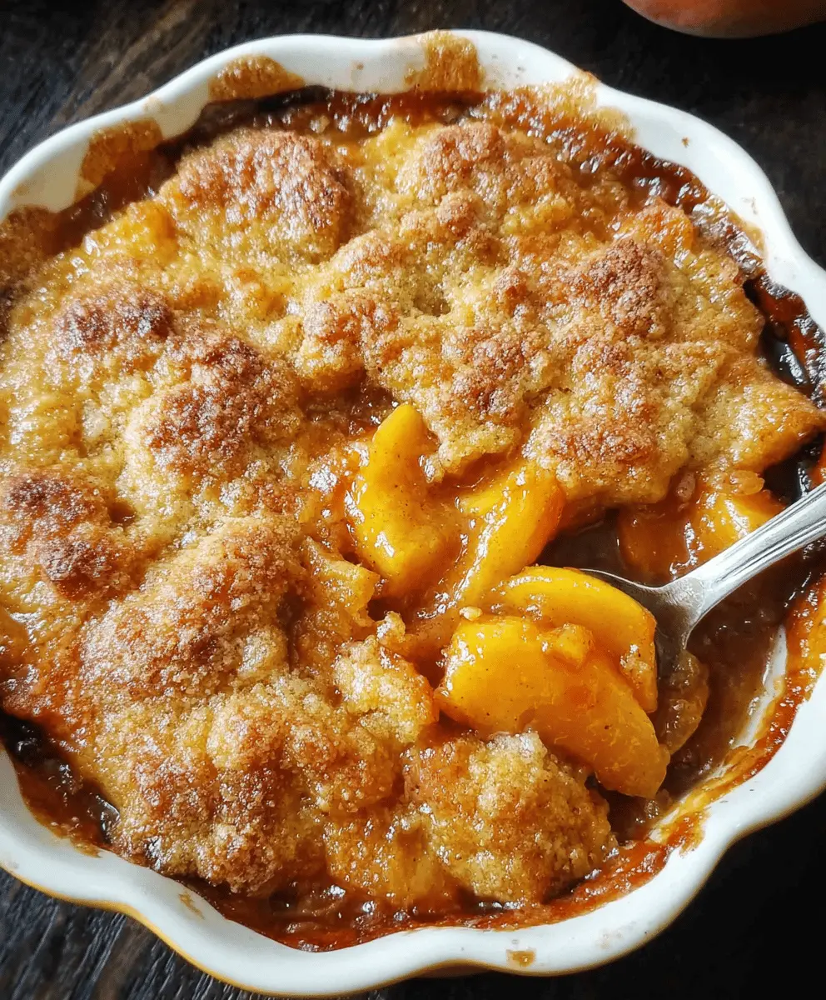

Featured Dessert Recipes
Indulge in the sweet and comforting flavors of southern desserts with our featured recipes. From classic favorites like pecan pie and peach cobbler to modern twists on traditional treats, our collection of southern dessert recipes is sure to satisfy your sweet tooth. Each recipe is crafted with love and care, using simple ingredients to create deliciously decadent desserts that are perfect for any occasion. Whether you're looking for a quick and easy treat or a show-stopping dessert for a special gathering, our featured southern dessert recipes have got you covered.
Peach Cobbler
Our peach cobbler recipe is a classic southern dessert that's easy to make and absolutely delicious. The sweet, juicy peaches are nestled in a buttery, crumbly topping that's perfect for serving with vanilla ice cream or on its own.
Ingredients
- 4 cups sliced fresh peaches (about 6-7 medium peaches)
- 1 cup granulated sugar
- 1/2 cup all-purpose flour
- 1 teaspoon ground cinnamon
- 1/4 teaspoon ground nutmeg
- 1/4 teaspoon salt
- 1 tablespoon lemon juice
- 1 cup all-purpose flour
- 1 cup granulated sugar
- 1 teaspoon baking powder
- 1/4 teaspoon salt
- 1/2 cup unsalted butter, melted
- 1/2 cup milk
Instructions
- Preheat your oven to 350°F (175°C). Grease a 9x13-inch baking dish.
- In a large bowl, combine the sliced peaches, 1 cup of sugar, 1/2 cup of flour, cinnamon, nutmeg, salt, and lemon juice. Toss until the peaches are well coated. Pour the peach mixture into the prepared baking dish.
- In another bowl, whisk together 1 cup of flour, 1 cup of sugar, baking powder, and salt. Add the melted butter and milk, stirring until just combined. The batter will be thick.
- Drop spoonfuls of the batter over the peach mixture in the baking dish. It doesn't need to cover all the peaches; it will spread as it bakes.
- Bake in the preheated oven for 40-45 minutes, or until the topping is golden brown and a toothpick inserted into the topping comes out clean. Let it cool slightly before serving. Enjoy with a scoop of vanilla ice cream if desired!